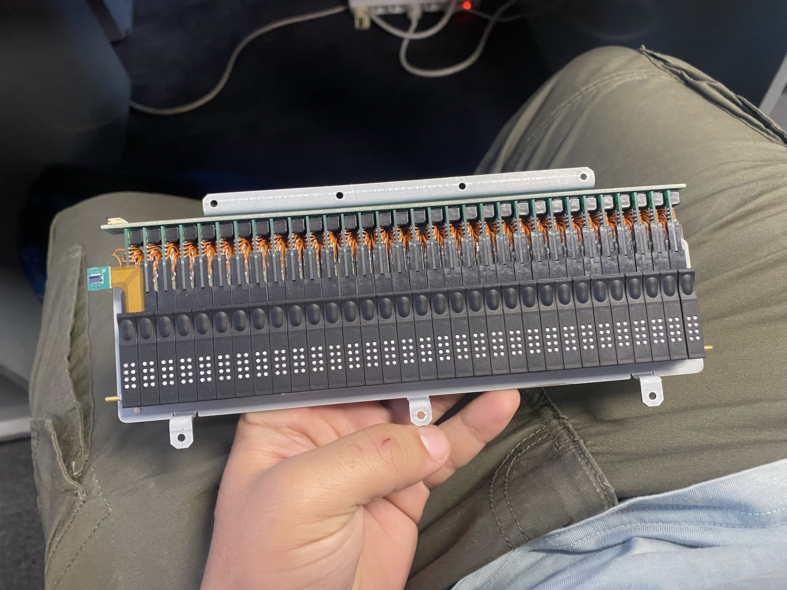

Bienvenue sur mon portfolio
Razi Abbadi
Alternant chez Eurobraille
Je suis un employé chargé de la production des produits Eurobraille, notamment le Bbook et le Bnote.
Expérience Entreprise
Eurobraille
AlternanceJe participe à la production du Bbook, un ordinateur tactile destiné aux personnes déficientes visuelles. Je m'occupe également de la production du Bnote, un bloc-notes conçu pour les personnes déficientes visuelles.
- Je suis également chargé, durant la production, de la partie logicielle avec un STM32 ainsi que de la partie matérielle avec un Raspberry Pi.
- Je suis en charge de tester les produits et de m'assurer de leur bon fonctionnement.
- Enfin, je m'occupe également du service après-vente (SAV) et de la maintenance des produits.
Parcours Scolaire
BTS CIEL - Option Électronique et Réseaux
BUT Informatique
Bases solides en algorithmique, web et réseaux.
Projets Académiques BUT Informatique
Création d'un jeu vidéo durant mon BUT Informatique
J'ai participé à la création de ce jeu vidéo en équipe de deux personnes. Il s'agit d'un jeu en 2D développé en C++ avec Code::Blocks.

Création d'un site web pour une maison d'édition
Ce projet comprenait le recueil des besoins, la réalisation de maquettes ainsi que le développement du site web.
Installation de poste via un raspberry pi
Avec un camarade, je me suis chargé de mettre en place un système d'installation de postes via un Raspberry Pi, ainsi que de la gestion de sa base de données.

En entreprise
Production de Bbook
Tout d'abord, je souhaite vous présenter le Bbook. Il s'agit d'un ordinateur portable conçu pour les personnes non voyantes. Il dispose d'un afficheur braille, de touches clavier, d'une carte SMARC intégrant le processeur, d'un SSD de 250 Go ainsi que d'un module Bluetooth, l'ensemble étant relié à une carte mère.
Ensuite je m'occupe de sa production et de sa maintenance

Production de Bnote
Je suis également chargé de la production et de la maintenance des Bnote. Ils sont déclinés en plusieurs catégories selon la taille de l'afficheur, notamment en versions 20, 40, 64 et 80 cellules, permettant d'afficher en braille le contenu de l'écran.
et aussi sont séparés par des catégories light sans raspberry pi ou sans les haut-parleurs.
SAV et Maintenance
Je suis chargé de la maintenance et du service après-vente des produits Bbook et Bnote. Cela inclut la réparation des produits défectueux, les problèmes liés à l'afficheur, le remplacement de composants (comme une diode), ainsi que le flash des Raspberry Pi ou des cartes mères si nécessaire.
De plus, je réalise les tests sur les produits pour garantir leur bon fonctionnement, gère les stocks et traite les commandes des clients.
